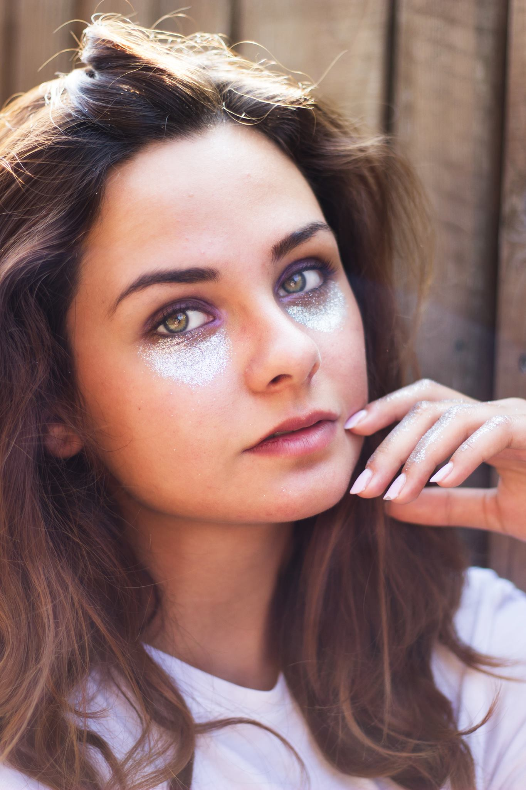
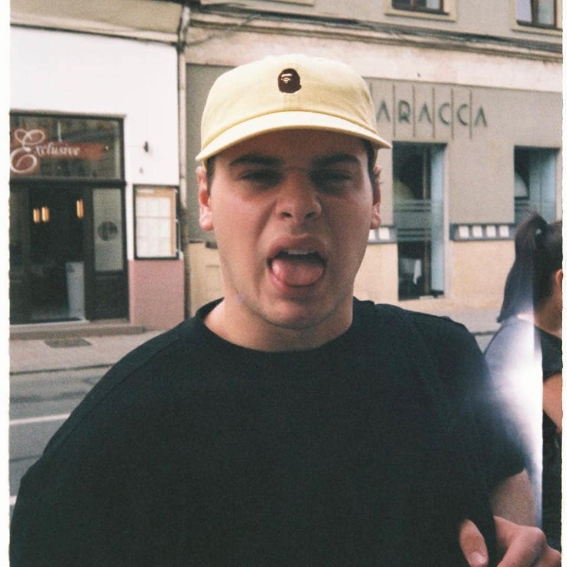
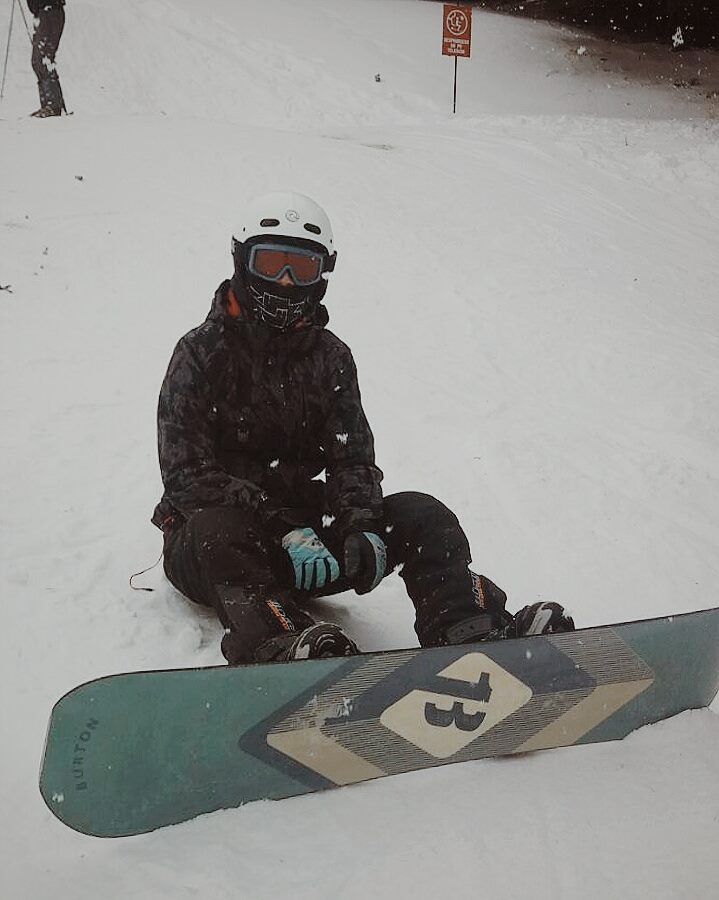

These people are my friends. Try to move your mouse around 'em.
|

Alexandra Nistor.
Best friend in the whole wide world. Superpower: can make you feel better in 0.9 sec at any given time. Weakness: needles & Alexandru Resiga |
Aleeeex Naimaaaan
Computer God, Metal Superfan & Loving Friend Superpower: can find anything on stackoverflow (super search), including things that don't exist yet. Weakness: coloured socks. |

Razvi Morea
The Frentender Superpower: can drive with no hands. Weakness: meat. |
 The Skiier
Superpower: can shut up at any time and any place. Weakness: restante. |
Cezzzzzar
Offended Superpower: can destroy anyone with his jokes Weakness: helpless without glasses. |